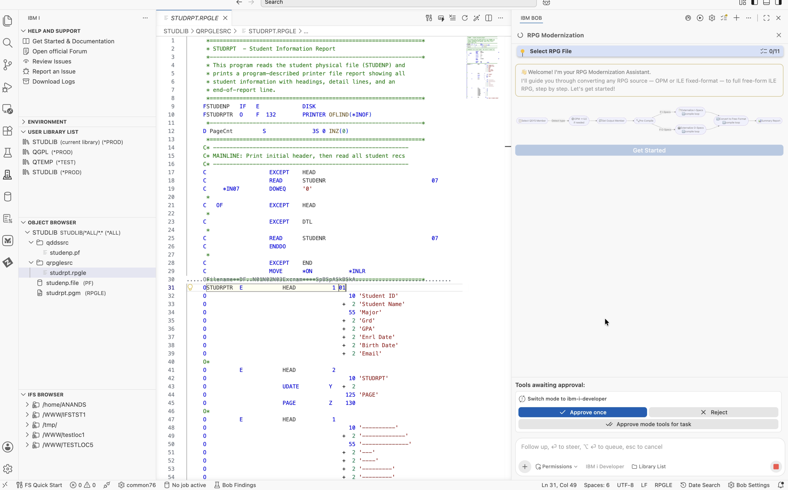

The Program: A Native RPG Program with a Program-Described Printer File
The program I selected for modernization was STUDRPT. It reads student records from the STUDENP physical file and prints them using a program-described printer file.
The printer file layout, including field positions, spacing, column headings, and print formats, is defined directly in the RPG source using O-specs. Since free-format RPGLE does not support O-specs, these definitions must first be converted into an external DDS printer file.
IBM Bob's RPG Modernization workflow handles the full conversion — from externalizing a program-described printer file into DDS through to modernizing the RPG program to free-format.
The RPG Modernization Workflow: What It Does and How It Starts
IBM Bob with IBM i Developer Mode provides a built-in RPG Modernization workflow. IBM i Developer Mode must be active before starting the workflow, as it enables IBM Bob to connect directly to the IBM i system, access source members, execute CL commands, run SQL against Db2 for i, and compile programs.
When I triggered the RPG Modernization workflow, IBM Bob detected that STUDRPT.rpgle was already open in the editor and offered to use it as the input. After I confirmed, it read the source, identified the program type as RPG IV fixed format, and started the preparation steps.

The workflow then created a temporary working copy named STUDRPT_T.RPGLE in the same library. All intermediate changes were made to this copy, while the final free-format program was saved as a new member named STUDR_FREE.RPGLE. The original STUDRPT.rpgle remained untouched throughout the process.
Step 1: Pre-Conversion Compilation
Before making any source changes, IBM Bob provided the compilation option to establish a baseline. This helps identify any existing compilation errors before modernization and distinguish them from issues introduced during conversion.

IBM Bob used get_compile_actions to identify the appropriate compile command and provided CRTBNDRPG to compile the temporary copy. After compilation, it queried QSYS2.OBJECT_STATISTICS to verify that the STUDLIB/STUDRPT_T (*PGM) program object was created.
STUDLIB/STUDRPT_T (*PGM) created. Severity 00. The source was clean and ready for conversion.
Step 2: Detecting I-Specs and O-Specs
Next, the workflow analyzed the source to identify program-described I-specs and O-specs that might need to be externalized before converting the program to free-format RPGLE. It used separate subagents for each detection step.

I-Spec Detection
The I-spec detection subagent checked the source for program-described input specifications. It found that the STUDENP database file was already externally described through DDS, as indicated by the E in column 22 of its F-spec. No I-specs were present in the source.
hasISpecs: false and hasCycleLogic: false. The I-spec externalization step was automatically skipped.
O-Spec Detection
The O-spec detection subagent checked the source for program-described output specifications. It identified the OSTUDRPTR printer file at line 31 and confirmed that it was program-described. Based on this finding, the workflow proceeded to the O-spec externalization step.
Step 3: Externalizing O-Specs to a DDS Printer File
The workflow started a separate subtask for O-spec conversion. Before analyzing the source, IBM Bob loaded two IBM i Skills to guide the conversion.
rpg-pgmdb-conversion– Provides rules for identifying program-described and externally described files and distinguishing input and output specifications.rpg-ospec-conversion– Provides guidelines for converting O-specs into DDS printer files, including field positioning, overflow indicators, and spacing keywords.
The subtask also maintained a todo list to track the conversion steps, from analyzing the source and generating the DDS printer file to compiling it, updating the RPG program, and verifying the final changes.

Generating the External DDS Printer File
IBM Bob generated the DDS printer file STUDRPTR.PRTF in STUDLIB/QDDSSRC. The 37 O-spec lines were converted into DDS record formats.
The three HEAD print groups were converted into separate record formats: HEAD1, HEAD2, and HEAD3. The detail and footer formats were retained as DTL and END. IBM Bob also translated the field positions and spacing specifications into the corresponding DDS keywords.

The printer file was then compiled using CRTPRTF. IBM i confirmed its successful creation with message CPC7301: File STUDRPTR created in library STUDLIB.
Updating the RPG Source
After generating the DDS printer file, IBM Bob made the following changes to the temporary RPG source:
- Updated the printer file F-spec from program-described (
F) to externally described (E). - Changed the overflow indicator from
OFLIND(*INOF)toOFLIND(*IN01). - Replaced the
EXCEPToperations with correspondingWRITEoperations, referencing the new DDS record formats. - Removed all 37 O-spec lines from the RPG source.

- FSTUDRPTR O F 132 PRINTER OFLIND(*INOF) - C EXCEPT HEAD - C OF EXCEPT HEAD - C EXCEPT DTL - C EXCEPT END - OSTUDRPTR E HEAD 1 01 - O 10 'Student ID' - ... 30 more O-spec lines
+ FSTUDRPTR O E PRINTER OFLIND(*IN01) + C WRITE HEAD + C *IN01 WRITE HEAD + C WRITE DTL + C WRITE END + + // O-specs removed. Layout now in STUDRPTR.PRTF.
Compile Error and Automatic Correction
After applying these changes, IBM Bob compiled the updated RPG program. The first attempt failed because the STUEML (email) field length in the generated DDS did not match the field definition expected by the RPG program.
In O-specs, the field length is implied by its ending position, whereas DDS requires an explicit field length. The generated definition needed to be corrected to match the program's field definition.
IBM Bob identified the mismatch, corrected the DDS field length, and recompiled the printer file and RPG program.
STUEML (email) field length in the newly generated DDS did not match what the RPG compiler was expecting based on the physical file's external description.
STUEML field length in the DDS, recompiled the PRTF, and recompiled the RPG program. Both compiled at severity 00 with no further errors. This completed the O-spec externalization step.
Step 4: Converting the Full Program to Free-Format RPGLE
With the printer file externalized and the RPG source updated, the working copy was ready for free-format conversion. At this stage, the program used an externally described printer file, and the O-specs had been removed.
The free-format conversion subtask loaded five IBM i Skills to guide the conversion:
rpg-fixed-to-free– Provides the rules for converting H, F, D, and C specifications into free-format RPG.rpg-primer-basics– Covers basic RPG language concepts and RPG variant detection.rpg-specs-primer– Provides guidance on RPG specification structures.rpgle-specs– Provides references for ILE RPG IV specifications.rpg-ile-understanding– Covers ILE concepts, including activation groups and service program structures.
These skills provided the language and conversion guidance for analyzing and converting the remaining specifications.

Applying the Free-Format Changes
The conversion included the following changes:
- H-specs: Replaced with the
**FREEdirective, followed byCTL-OPT DFTACTGRP(*NO) ACTGRP(*NEW);. - F-specs: Converted into
DCL-Fdeclarations with the corresponding file keywords and options. - D-specs: Converted the standalone variable declaration into
DCL-S PageCnt ZONED(3:0) INZ(0);. - C-specs: Converted the calculation logic into free-format equivalents, including
DOW,READ,WRITE, andENDDOoperations. - Loop condition: Replaced the fixed-format
*IN07 DOWEQ '0'condition withDOW NOT %EOF(STUDENP);, using the%EOFbuilt-in function. - LR indicator: Replaced
MOVE *ON *INLRwith the direct assignment*INLR = *ON;. - Subroutine: Preserved the
BEGSR PRTHDRsubroutine structure usingBEGSRandENDSRin free-format syntax.
Compiling the Converted Program
IBM Bob saved the converted source as STUDR_FREE.RPGLE in STUDLIB/QRPGLESRC.
It then compiled the program using CRTBNDRPG. Compilation succeeded on the first attempt with severity 00 and no errors.
This completed the conversion of the RPG program to free-format RPGLE.
The Final Result: STUDR_FREE.RPGLE

What Made This Possible
The capabilities used in this modernization were provided through Premium Package for i (PPI). With IBM i Developer Mode active, IBM Bob could work directly with the IBM i system instead of simply generating code for manual implementation.
The RPG Modernization workflow coordinated the conversion, while IBM i Skills provided guidance for O-spec externalization and fixed-to-free conversion. IBM Bob also used tools such as generate_dds to create the external DDS printer file, CL commands to compile the printer file and RPG program, and SQL services to verify the compiled program object.
This allowed IBM Bob to analyze the source, make the required changes, compile the results, identify and correct a compilation issue, and produce the final free-format RPGLE source. The original program remained unchanged throughout the process.
Watch It in Action
A full walkthrough of the RPG Modernization workflow running live on IBM i, built using IBM i Developer Mode in IBM Bob Premium Package for i (PPI).
Next Steps
If you want to try IBM Bob and IBM Bob Premium Package for i (PPI) yourself, here are the resources to get started:
- Welcome to IBM Bob — bob.ibm.com/docs/ide
- Start Your Free Trial — bob.ibm.com/trial
- IBM Bob Premium Package for i (PPI) — bob.ibm.com/docs/ide/premium-packages/bob-for-i/bob-for-i-index
- Frequently Asked Questions — bob.ibm.com/docs/ide/faq